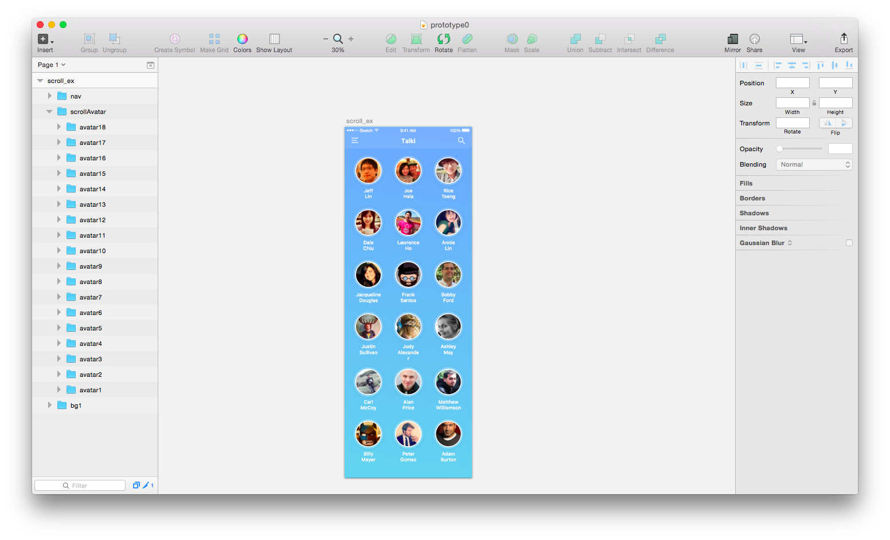
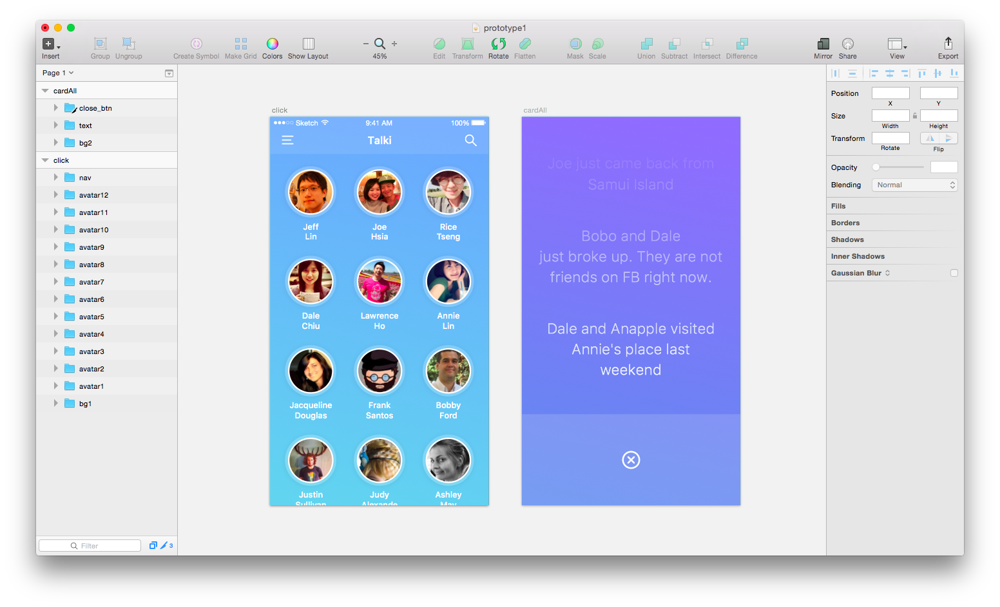

Framer.js
Interactive prototyping tool
Rice Tseng / Interaction Designer @Yahoo
Why Framer?
Cross-platform
for iOS, Android, desktop or the web
High-fidelity prototypes
!= higher resolution
cause me
to think different
and better idea
Real devices
Play, see and touch designs on real devices
Key points before coding
Initial properties
How long should the animation take?
What’s the element timing?
Which element is the next animations?
Final properties
Source

Prototype 0
Scroll
Import sketch file

Utils.globalLayers(prototype0)
Create a new ScrollComponent
scroll = new ScrollComponent
width: 750
height: 1206
y: 126
x: 0
scrollAvatar.superLayer = scroll.content
Add padding
scroll.contentInset =
bottom: 80
top: -100
Enable or disable horizontal scrolling.
scroll.scrollHorizontal = false
Prototype 1
Click & Utilities
Import sketch file

springVal = 'spring(300,0,30)'
Framer.Defaults.Animation =
curve: "spring"
curveOptions:
tension: 95
friction: 30
velocity: 30
avatarCount = 12
for count in [1..avatarCount]
avatarAll = prototype1["avatar" + count]
avatarAll.states.add
start: {scale:0, opacity:0}
avatarAll.states.switchInstant "start"
Click Event
prototype1.close_btn.on Events.Click, ->
prototype1.cardAll.animate
properties:
opacity: 0
Utilities
Utils.delay 0.5, ->
timeFactor = 0.03
Utils.delay 1 * timeFactor, -> prototype1.avatar1.states.next()
Utils.delay 2 * timeFactor, -> prototype1.avatar2.states.next()
Utils.delay 3 * timeFactor, -> prototype1.avatar3.states.next()
Utils.delay 4 * timeFactor, -> prototype1.avatar4.states.next()
Utils.delay 5 * timeFactor, -> prototype1.avatar5.states.next()
Utils.delay 6 * timeFactor, -> prototype1.avatar6.states.next()
Utils.delay 7 * timeFactor, -> prototype1.avatar7.states.next()
Utils.delay 8 * timeFactor, -> prototype1.avatar8.states.next()
Utils.delay 9 * timeFactor, -> prototype1.avatar9.states.next()
Utils.delay 10 * timeFactor, -> prototype1.avatar10.states.next()
Utils.delay 11 * timeFactor, -> prototype1.avatar11.states.next()
Utils.delay 12 * timeFactor, -> prototype1.avatar12.states.next()